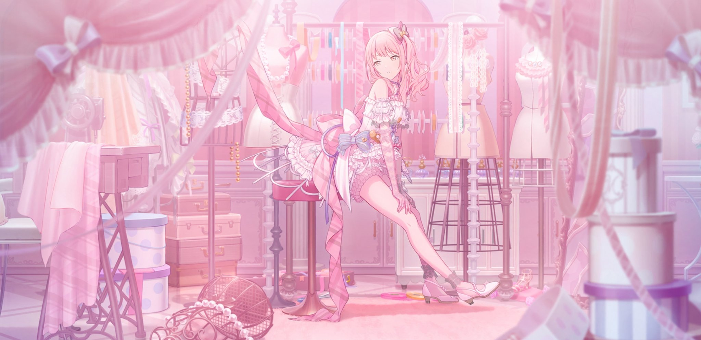
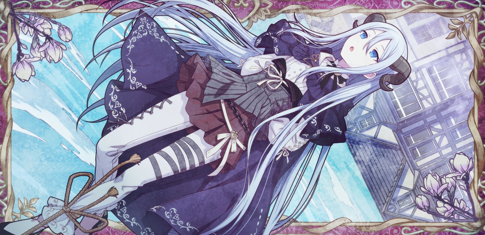
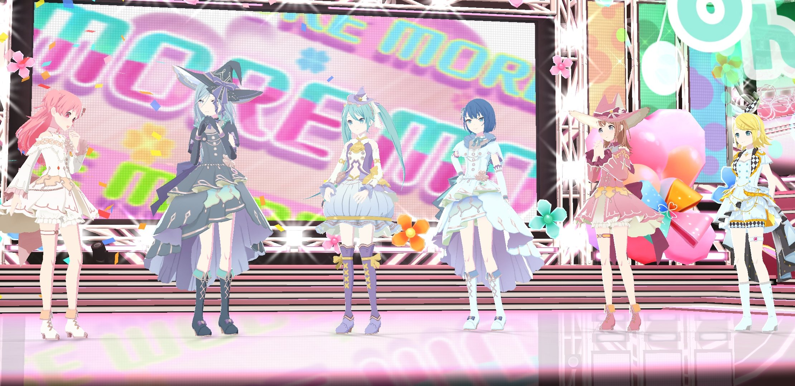
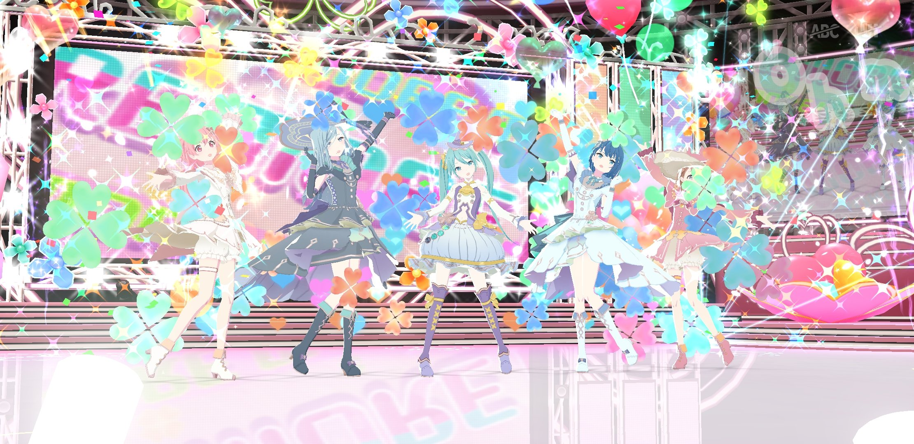
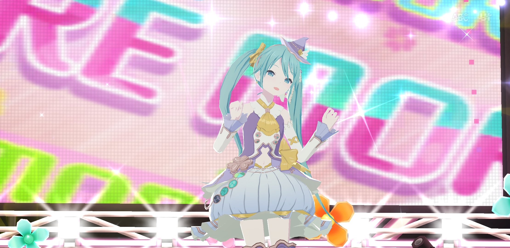
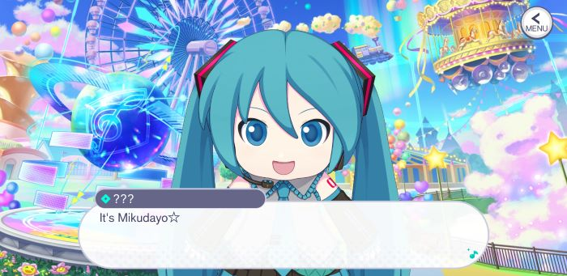

hatsune miku: colorful stage (aka project sekai)
release date: sep 30, 2020
developer: crypton future media
genre/type: rhythm, visual novel, gacha
logs
okay the rumors are true. i enjoy playing the hatsune miku rhythm gacha game  tbh as long as i dont spent a single dollar on it we are chilling
tbh as long as i dont spent a single dollar on it we are chilling 
been playing it on and off for a couple of months now! i play on english servers. i really enjoy the rhythm and visual novel aspect of it tbh. now whenever i just wanna numb my brain for a bit i just open this app instead of twitter, it has worked wonders [14.jul.23]
fav groups and charas
fav groups are vivid bad squad and nightcord
fav charas are kohane and an (DO NOT SEPERATE), emu, mizuki, and some others but i dont remember their names atm *crying*
fav cards i have
honestly some of these are so fucking pretty like wow  
other screenshots
my phone overheats like crazy whenever i play a damn show
  